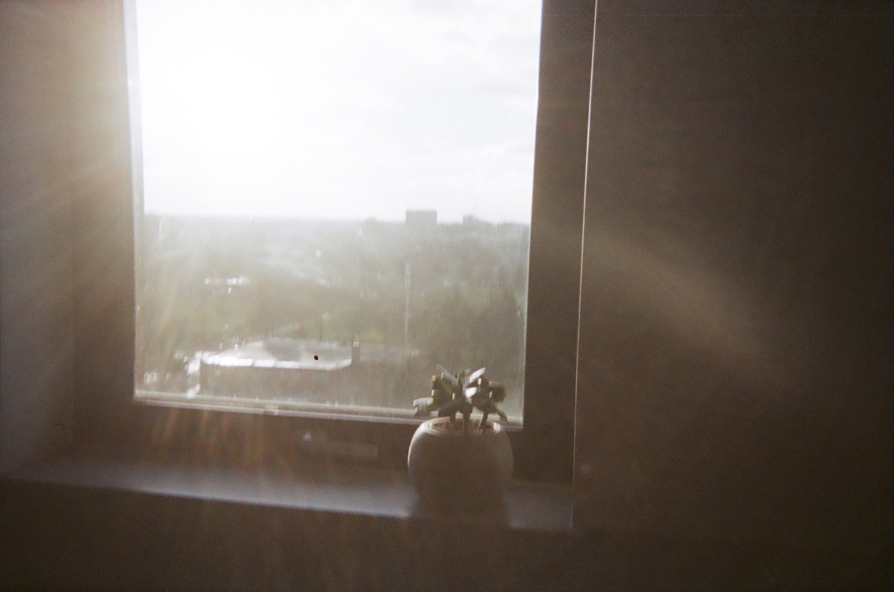
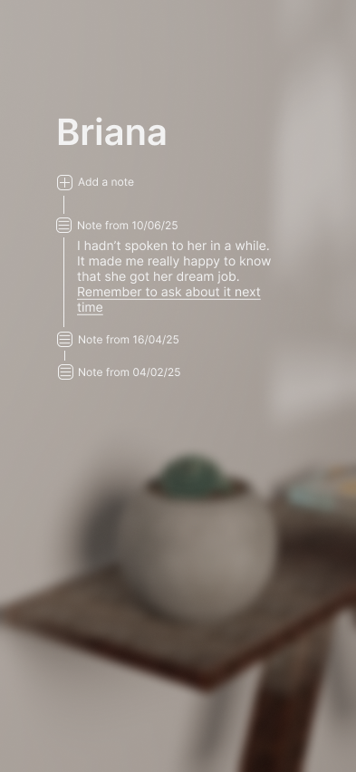
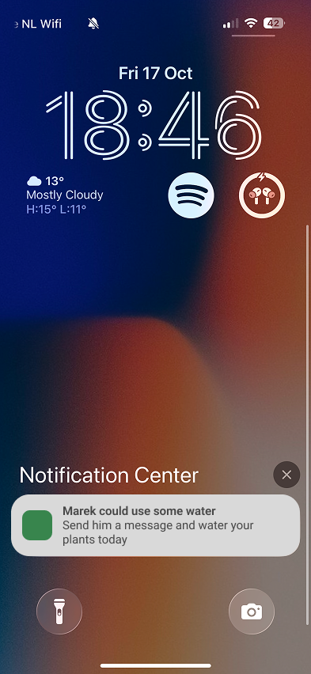
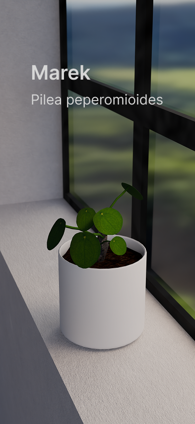

I Just Missed My Friends
Date
Ongoing
Project Type
Personal
Roles
Product Design, Interaction Design, iOS development
Skills
Concept Development, Visual Design, Blender, Swift
When I moved away from home, I was filled with excitement for everything a new place could hold. I would try new things, live through experiences unlike anything I had known before, and meet all kinds of new people.
With time, the excitement settled. The new experiences became my routine, and the new faces became familiar. Then winter arrived. Dutch winters don't so much get cold as get dark. First I missed the sunny Mexican winters. Then I missed the people.
I still talked to my best friends. We sent each other memes, reacted to each other's stories. But if you had asked me what was actually going on in their lives, I couldn't have told you.
What made me feel better was calling them. Not to say anything in particular, just to listen to them talk about their lives and what they were experiencing. Every call made me feel a tiny bit more connected to home.
At the beginning, I called consistently. But life always finds an opportunity to get in the way. Studying, deadlines, projects would all make me forget that it had been six weeks since the last time I called them.

The plants on my windowsill
Around that time I had gotten into houseplants. My room was small and couldn't fit many, but the few I had made me genuinely happy.
At some point, I think while watering one of them, something clicked. Friendships, like plants, need care to stay alive. You can neglect them for a while, and most will forgive you. But if they go long enough without attention, they wither. And just like plants, not every friendship needs the same kind of care. Some people want a long phone call every week. Others are happy with a voice note every month and a proper catch-up whenever you're in the same city.
I was good at caring for my plants and bad at caring for my friends. With plants, I could see when I was neglecting them. My friendships had no windowsill.
I'm not good at keeping in touch
Garden doesn't exist because I'm a naturally attentive friend who wanted to share his system. It exists because I'm not. I let weeks slip by. I tell myself I'll call this weekend, and then the weekend is gone. Living abroad made this worse, because now I'm not even in the same time zone.
What Garden is
Garden gives each of my close relationships a plant. I keep the plant alive by keeping in touch with the person it represents. A call, a message, meeting up: each of these waters it. Leave it too long, and it starts to wilt. And different friendships require different maintenance. A fern needs to be watered consistently, while a cactus only ever needs attention a few times a year.
Alongside each plant is a small log with a character limit, where I write down when I last reached out and what I talked about. My friend mentioned a job interview, so next time I ask how it went. Small details help me remember, and make them feel cared for. Garden also keeps track of time zones, so I know when it's actually a good moment to call, and it nudges me toward variety: a text one week, a call the next.
The visual language came from walking around the Netherlands in the evening, where I could often see straight into people's living rooms, with plants lining every windowsill. Those plants looked alive because they lived somewhere they were cared for. So the interface is built from transparent layers: however deep you go into a menu, the plant stays visible behind it. The relationship is always at the centre of the screen.



Why I think it's useful
Personal CRMs already exist, but most of them borrow the language of sales: contacts, pipelines, follow-ups. That language feels out of place when I'm talking to my best friend from middle school. I'm not managing anything or anyone; I'm looking after something that is precious to me.
It's also not about meeting new people. There are plenty of social platforms out there dedicated to expanding networks. I spent a lot of time making Garden feel like home because it's meant for the people who make me feel at home.
I also take the risk of guilt seriously. A wilting plant has to motivate without punishing. The goal is the gentle feeling of noticing a dry pot, not the anxiety of a red notification badge.
Garden isn't just for me, either. Students who move abroad, people who relocate for work, anyone whose friends are scattered across countries and time zones: for all of them, the friendships that matter most are often the easiest to neglect, precisely because nothing in daily life brings them back. That is a large group of people with a real, recurring need and very few tools built with their feelings in mind.
Ultimately, Garden can't make me a good friend. It can't check whether I actually called, and it doesn't try to. If I lie to my plant, the only person I'm fooling is myself. The point is to offload the part of friendship that I'm bad at, so that I can just focus on being a friend.
Where it is now
The first version of Garden was not pretty. It was a calendar with plant names in it, some contact details, and a logbook in my notes app. But it worked. I called people more. I remembered things. A few friendships that had gone quiet started growing again.
I'm building the next version in Swift, so that other people can also keep their plants happy.
All of this to essentially say: I just missed my friends.